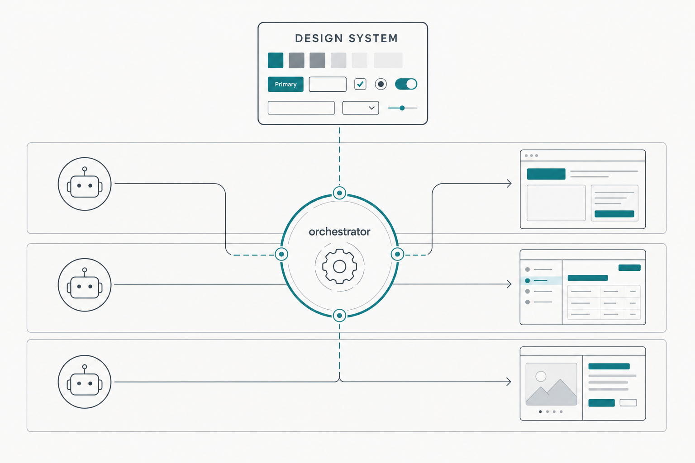
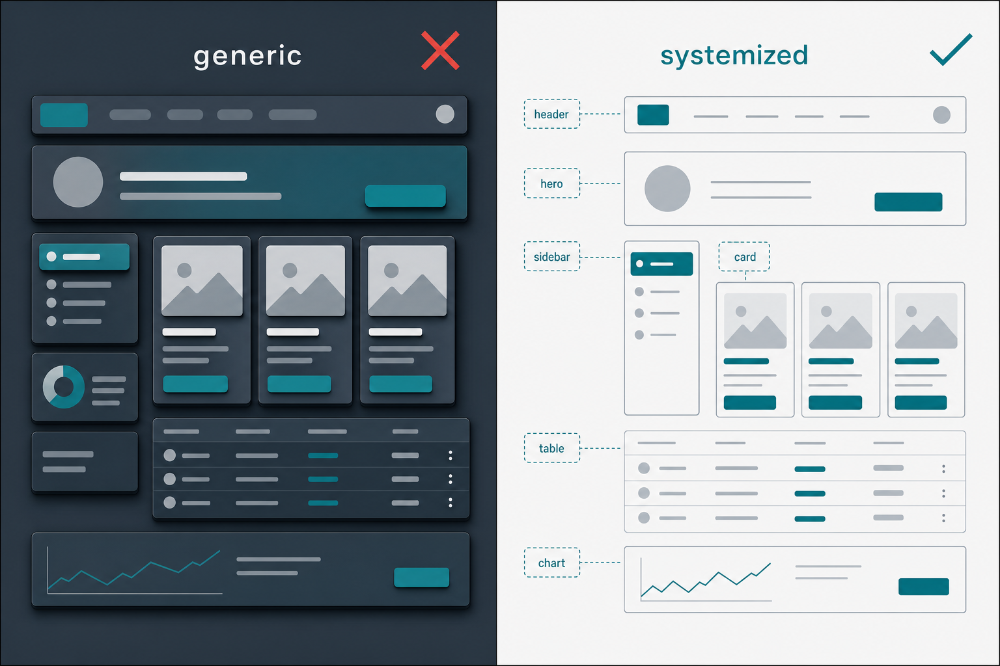
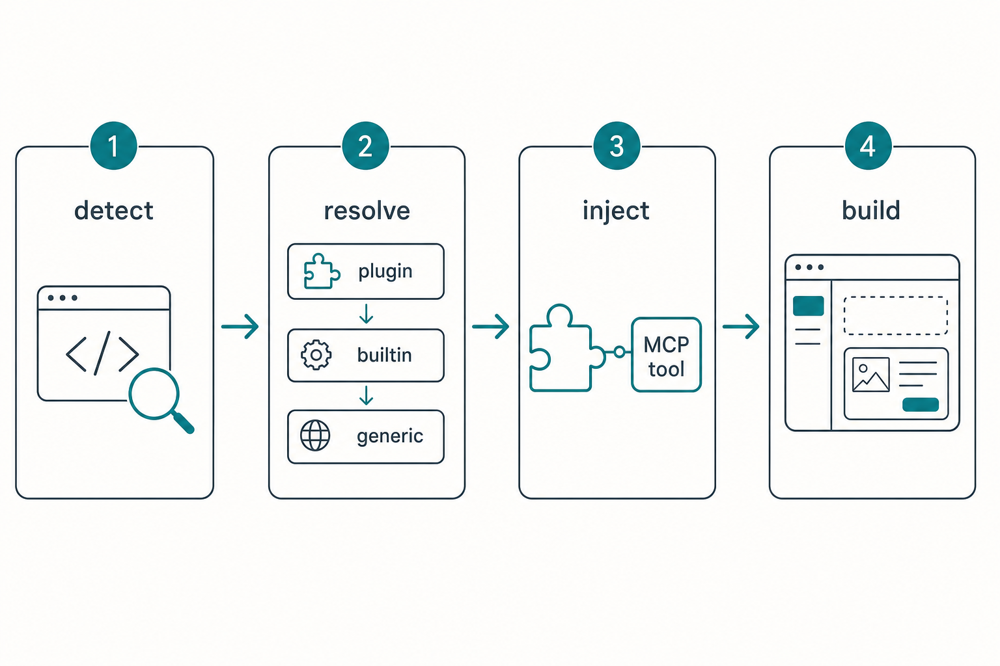
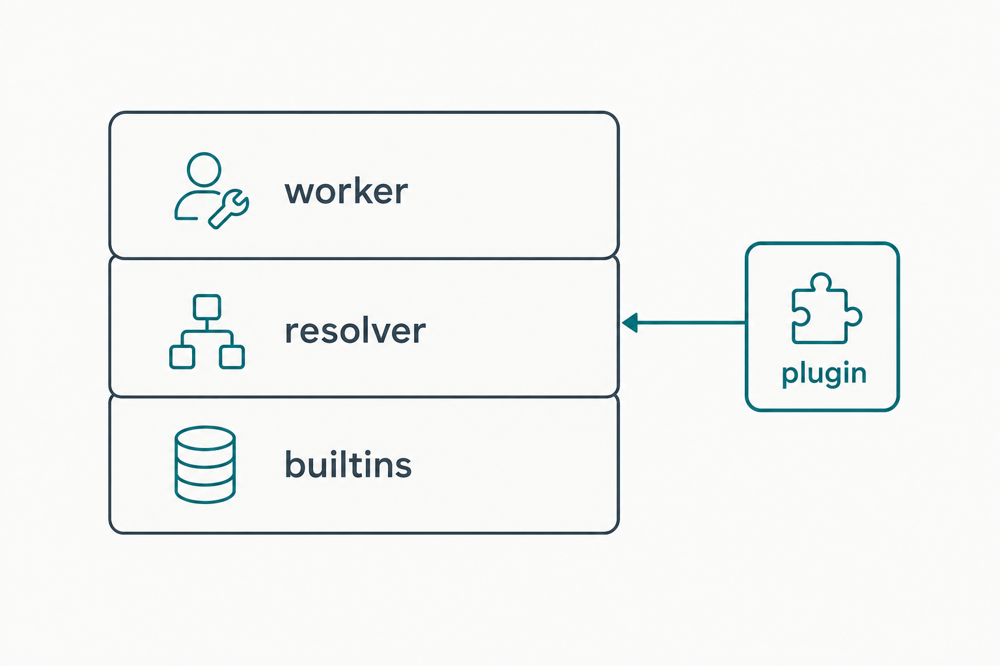

Stack-Aware Design System & Component Inventory
Give the orchestrator a design language it resolves per techstack and follows every time — machine-readable tokens, a component vocabulary, and anti-slop rules — so agents build UI from a known system instead of regressing to generic Tailwind.

Purpose
Add a first-class, stack-aware design-system layer to the platform so that when an
agent builds or polishes a UI, it works from a known component vocabulary and token set
resolved from the target project's detected surface and framework — web
(Phoenix/HEEx, React/JSX, Svelte, …) or terminal/TUI (Ink, Bubble Tea, Ratatui,
Textual, and Elixir's own Ratatouille + Owl) — not from whatever generic markup or stale library its
training data reaches for. The layer is a data-defined descriptor (tokens + component inventory +
rules + paradigm), resolved plugin → builtin-per-(surface,framework) →
generic, injected into every worker's charter, and pullable
on demand through an MCP tool. It is distributed as an ordinary plugin, so adding a design system for
a new framework — web or terminal — is one package with zero core change.
Problem
The observed symptom — "the design and UI is not good" — is not a missing generator; it is a
missing design system. Agents produce functional CRUD, but nothing tells them what
"good" looks like for this project: which components exist, what the spacing/type/color tokens
are, which patterns to avoid. Output therefore regresses to a generic mean (the same purple-gradient,
three-feature-card, heavy-shadow slop the platform's own ui-ux-foundations skill already
names as failures).
The platform already ships close analogs but none closes this gap:
- exists
plugin_library/ui-ux-mvp— four:skillbundles of cross-surface prose principles (foundations rubric, anti-slop list, web/desktop/TUI polish). Valuable, but opt-in, generic, and not stack-aware: no component vocabulary, no tokens, no per-framework resolution, no automatic injection. - exists Capability tokens (
{{TEST_COMMAND}}…) and the five-stage:quality_gate— proof the "resolve a stack-aware descriptor, serve it to agents" pattern works — but there is no UI/design token, no design descriptor, and no design field anywhere inProjects.Capabilitiesor the token registry.
The research the operator gathered (v0, Magic Patterns, 21st.dev vs. Petal, daisyUI, Fluxon, Google
Stitch's DESIGN.md) converges on one durable conclusion: for a server-rendered stack you
don't want a JSX generator — you want a component library that ships an agent-readable schema (MCP or a
rules file), injected through the same mechanism you already orchestrate with. That is exactly a
seam this platform can own natively, at near-zero recurring cost.
The same gap — and the same fix — applies to terminal UIs. When an agent builds a TUI it
faces a harder version of the problem: it must first pick the right framework for the language
(there is no single default), then use that framework's real widget vocabulary and paradigm instead of
hand-rolling escape codes or reaching for a dead library (blessed, npyscreen, tui-rs — all
abandoned, yet heavily represented in training data). The platform already ships a
tui-ux-polish skill in ui-ux-mvp, and the operator's verified
specs/tui-framework-decision-reference.md already encodes the language→framework router, the
per-framework component maps, the paradigm fork (immediate-mode / Elm-MVU / retained), the code-gen rules,
and the maintenance-risk flags. That knowledge is currently inert prose: nothing resolves it per
project or injects it into a worker. This plan turns it into the same resolvable, injectable, MCP-servable
descriptor as the web surface. Notably, repo_builder's own Elixir/BEAM stack routes to
Ratatouille + Owl — a TUI control surface can be driven from the same node.

Solution
Introduce a Design System subsystem that structurally mirrors the quality-gate stack (the closest working analog) and composes two existing injection patterns. Six moving parts, each with a direct template already in the codebase:
| Part | What it is | Mirrors (template in-repo) |
|---|---|---|
| Kind | A closed :design_system contribution kind (the one sanctioned core edit) | plugins/contribution.ex |
| Descriptor | Never-raises wire→domain domain: surface (web|tui), framework, paradigm, tokens, components[], rules, references | plugins/quality_gate.ex |
| Resolver | Precedence plugin → priv/design_systems/<surface>-<framework>.json → generic, token-filled, provenance-tagged; TUI adds a language→framework fallback (the reference's §1 router) | orchestrator/gate_resolver.ex |
| Contract | render/1 project → a worker-facing markdown block, folded into every worker's charter + the orchestrator prompt | stack_layers/contract.ex |
| MCP tool | resolve_design_system — the platform-native Petal-MCP analog; returns tokens + inventory + rules JSON | orchestrator/tools/quality_gate.ex |
| Builtins + plugin | Web: {generic,web-phoenix,web-react}.json. TUI: {tui-ratatouille,tui-ink,tui-bubbletea,tui-ratatui,tui-textual}.json. Plus a sample plugin proving zero-core extensibility | priv/quality_gates/*.json + plugin_library/quality-gates-elixir |
Three supporting facts shape the design. First, the coarse Projects.Profiler stack is
language-level only ("elixir", "node") — it does not distinguish Phoenix
from bare Elixir or React from bare Node. So the linchpin is a small surface- and
framework-detection enhancement to the Profiler (grep mix.exs for :phoenix
vs :ratatouille/:owl; package.json deps for
react/svelte vs ink/@opentui/*; go.mod for
bubbletea; Cargo.toml for ratatui; pyproject.toml for
textual), producing surface + framework keys the resolver keys on.
Second, TUI framework choice is a two-step decision (language → framework, with override
rules), so when no TUI dep is detected the resolver applies the reference doc's §1 stack-router default for
the language (Elixir → Ratatouille+Owl, Go → Bubble Tea, Rust → Ratatui, Python → Textual, JS → Ink).
Third, the existing ui-ux-mvp skills (including tui-ux-polish) stay as the
prose/rubric layer; the descriptor's rules reference them and the
verified tui-framework-decision-reference.md rather than duplicating them. The descriptor is
the machine-readable, surface- and framework-specific vocabulary + tokens + paradigm; the skills
and reference are the human-readable principles; the review stage uses both.
Per surface, the inventory points at concrete, current vocabularies: web — Phoenix at
core_components.ex + Petal/daisyUI, React at shadcn/Tailwind; TUI — Ink at
@inkjs/ui (not stale ink-*), Bubble Tea at Bubbles+Lip Gloss+Huh, Ratatui at its
widgets + tui-input/tui-textarea, Textual at its widget set + TCSS, and Elixir at
Ratatouille (TEA) + Owl. Each TUI descriptor also carries the paradigm (immediate-mode / Elm-MVU /
retained) that dictates how much scaffolding the agent must generate, and the reference's per-framework
code-gen rules and dead-dep flags. This is the free, ownable, antifragile layer the research recommends
building first — a paid generator could plug in later via the existing
harness_adapter/mcp_tools seams, but only after the design language exists.

Relevant Files
Existing Files
- existing
lib/repo_builder/plugins/contribution.ex— add:design_systemto the closed@type kind(L31–40) +@kinds(L42) + a moduledoc bullet; parsing/validation/Activationbucket then become automatic. - existing
lib/repo_builder/plugins/quality_gate.ex— the exact template for the new descriptor domain (typedstruct + nestedWiremodule + never-raisesparse/1/from_wire/1/normalize/2). - existing
lib/repo_builder/orchestrator/gate_resolver.ex— template for the resolver:descriptor/1precedence chain (L81–96),@stack_gatesmap (L31–40),builtin_path/1viaApplication.app_dir(L123–126), token fill (L143–200). - existing
lib/repo_builder/plugins/activation.ex— kind-generic effective-set engine; the resolver's plugin layer callsActivation.contributions(project_id, :design_system)(accessor L66). No edit needed —compute/1buckets any registered kind. - existing
lib/repo_builder/projects/profiler.ex— add framework detection todetect_stack/1(L71–82); markers at L33–41. Produces theframeworksignal the resolver keys on. - existing
lib/repo_builder/projects/context_primer.ex— add a "Design system: <name>" line tocapability_lines/1(L52–70) so it appears in the primed block. - existing
lib/repo_builder/stack_layers/contract.ex— template forDesignContract.render/1(project → worker-facing markdown, or""when none). - existing
lib/repo_builder/orchestrator/tools.ex— thecreate_agent/2chokepoint that folds the stack contract onto a worker's persistedsystem_prompt(add the design block, ordered stack-contract → design → task → reporting); also the tool dispatch table (addresolve_design_system). - existing
lib/repo_builder/orchestrator/system_prompt.ex— inject the design block into the orchestrator prompt as a sibling ofproject_stack_block/1(L324–330) /project_primer_block/1(L300–319). - existing
lib/repo_builder/orchestrator/tool_catalog.ex— add theresolve_design_systemschema entry (mirrorrun_quality_gateat L803–860). - existing
lib/repo_builder/orchestrator/tools/quality_gate.ex— three-file template for the new MCP handler. - existing
priv/quality_gates/elixir.json— shape template for a builtin descriptor JSON. - existing
plugin_library/quality-gates-elixir/— template for the sample distribution plugin (manifest + asset). - existing
plugin_library/ui-ux-mvp/skills/ui-ux-foundations/SKILL.md+skills/tui-ux-polish/SKILL.md— the prose anti-slop rubric and TUI polish skill the descriptor'srulesreference (do not duplicate). - existing
specs/tui-framework-decision-reference.md— the verified TUI knowledge base: the §1 language→framework router (drives the resolver's TUI fallback), §3 cross-framework component maps (the TUI descriptors' vocabularies), §4.1 paradigm fork, §4.3 dead-dep flags, §5 per-framework code-gen rules, §2.7 Elixir/Ratatouille+Owl. Vendored as the citable source for every TUI builtin. - existing
lib/repo_builder_web/components/core_components.ex— the platform's own HEEx component set; the Phoenix builtin inventory names these plus Petal/daisyUI. - existing
lib/repo_builder/forge/generator.ex— optional Phase 6: add a:design_systemgenerator to@defs(L25–50) so operators can forge a bespoke descriptor from a repo's real components. - existing
ai_docs/quality-gate-plugins.md+.claude/commands/conditional_docs.md— template for the authoring doc, and the router row to add. - existing
config/config.exs— optionalconfig :repo_builder, :design_systems(builtin dir override) + Forge generator config (L454–459).
New Files
- new
lib/repo_builder/plugins/design_system.ex— descriptor domain:%DesignSystem{stack, framework, tokens, components, rules, references}+ nestedWire+ never-raisesparse/1/read/1/from_wire/1. - new
lib/repo_builder/orchestrator/design_resolver.ex—resolve/1precedence chain +@stack_designsmap +ResolvedDesign/provenance, mirroringGateResolver. - new
lib/repo_builder/orchestrator/design_contract.ex—render/1: project id → compact worker-facing markdown (tokens summary + top component tags + rules link), or""when none. - new
lib/repo_builder/orchestrator/tools/design_system.ex— MCP handler forresolve_design_system(returns tokens + inventory + rules JSON for the bound project). - new
priv/design_systems/generic.json— surface/framework-agnostic tokens + foundations-rubric rules (the always-resolvable base). - new
priv/design_systems/web-phoenix.json,web-react.json— HEEx/core_components + Petal/daisyUI, and shadcn/ui + Tailwind, respectively. - new
priv/design_systems/tui-ratatouille.json(Elixir/BEAM — the repo's own stack: TEA + Owl),tui-ink.json(@inkjs/ui),tui-bubbletea.json(Bubbles+Lip Gloss+Huh),tui-ratatui.json(widgets + tui-input/tui-textarea),tui-textual.json(widgets + TCSS) — each withparadigm, component vocabulary from the reference's §3 map, and §5 code-gen rules. - new
plugin_library/design-system-phoenix/(and/ordesign-system-tui-bubbletea/) — sample plugin(s) proving an active plugin's design system wins over the builtin (zero core change). - new
priv/forge/generators/design_system.md— optional Phase 6 generator prompt template ({{PROJECT_CONTEXT}}+{{SPEC}}slots). - new
ai_docs/design-system-plugins.md— authoring reference for design-system descriptors + stacks. - new
test/repo_builder/plugins/design_system_test.exs,.../orchestrator/design_resolver_test.exs,.../orchestrator/design_contract_test.exs,.../orchestrator/tools/design_system_test.exs— the boundary/precedence/injection/tool tests.
Implementation Phases
IMPORTANT: Execute every phase and task step by step, in order, top to bottom.
Status markers: [] idle · [wip] in progress · [x] complete · [f] failed. All start as []; the Build Plan workflow updates them as it works.
compile --warnings-as-errors · format --check-formatted · credo --strict ·
test --warnings-as-errors · dialyzer). Nothing lands red. Every new public function
carries an @spec; every struct is a typedstruct with @enforce_keys; all
external JSON crosses a TypeCheck wire→domain boundary and never raises.[x] Phase 1: Descriptor domain + builtin descriptors
Add the closed :design_system contribution kind and the never-raises descriptor domain, then
ship the three builtin JSON descriptors. This is the data spine everything else resolves and injects.
1. Register the contribution kind
[x]Add:design_systemto@type kindand@kindsinplugins/contribution.ex, with a moduledoc bullet ("a JSON descriptor: tokens + component inventory + rules").[x]ConfirmContribution.cast_kind/1+from_wire/1accept it and reject:unknown_kindunchanged (they key off@kinds).
2. Descriptor domain module
[x]CreateRepoBuilder.Plugins.DesignSystemmirroringquality_gate.ex:typedstructparent (surface— closed:web | :tui,stack,framework,paradigm— closed:immediate | :mvu | :retained | :nonefor TUIs,tokens :: map(),components :: [Component.t()],rules :: [String.t()],references :: [String.t()]) + nestedComponentstruct (name,tag,import/package,when_to_use,example). The web/TUI split is data, not two code paths.[x]Add the nested permissiveWiremodule (@type! wire, string-keyed) +conforms?/1, matching the QualityGate compile-time nesting pattern (type_check 0.13.7 workaround).[x]Implement totalparse/1(Jason.decode/1→from_map/1),read/1(reads a.jsonpath),from_wire/1,normalize/2,parse_component/1— every malformed case returns a tagged@type reason; never raises; neverString.to_atom/1on untrusted keys.
3. Builtin descriptors — web
[x]Authorpriv/design_systems/generic.json: a restrained token set (1 accent + neutral ramp, 4/8px spacing grid, ~1.25 type scale) andrulesthat cite theui-ux-foundationsanti-slop list + MVP rubric (reference, do not inline the full prose).[x]Authorpriv/design_systems/web-phoenix.json: components pointing atcore_components.ex(<.input>,<.button>,<.table>,<.icon>,<Layouts.app>) plus Petal/daisyUI vocabulary; HEEx examples; rules ("reach for an existing component tag before hand-rolling Tailwind"; the Phoenix v1.8 guidelines).[x]Authorpriv/design_systems/web-react.json: shadcn/ui component vocabulary + Tailwind tokens + JSX examples.
4. Builtin descriptors — TUI
One descriptor per (surface, framework), each sourced from tui-framework-decision-reference.md
§2 (capsules), §3 (component map), §4.1 (paradigm), §5 (code-gen rules). Lead with Elixir (the repo's own
stack) + the four majors.
[x]tui-ratatouille.json—paradigm: :mvu; components: Ratatouille view elements + Owl prompts/tables/progress; rules: "drive from the same BEAM node via TEA subscriptions on PubSub/GenServer msgs; use Owl for prompt/output, Ratatouille for full-screen"; note the termbox feature ceiling + Go/Rust sidecar escape hatch.[x]tui-ink.json—paradigm: :retained; components:@inkjs/ui(TextInput/Select/Spinner/…),<Box>/<Text>/<Static>; rules: append-only output in<Static>, memoize hot subtrees, guarduseInputraw-mode, prefer@inkjs/uiover staleink-*.[x]tui-bubbletea.json—paradigm: :mvu; components: Bubbles (list/table/viewport/textinput/…), Lip Gloss, Huh forms; rules: scaffold Model/Init/Update/View, all async viaCmd, forward+bubble child Update/Cmd, pin ONE major (v1 vs v2charm.land/tea.KeyPressMsg).[x]tui-ratatui.json—paradigm: :immediate; components: Block/List/Table/Tabs/Gauge/Chart/Scrollbar/Clear +tui-input/tui-textarea/tui-tree-widget; rules: generate the full harness (raw mode, alt screen, panic-restore viaratatui::init/restore+color-eyre), store*Statein the app struct, filterKeyEventKind::Press, pin exact 0.x.[x]tui-textual.json—paradigm: :retained; components: the Textual widget set (DataTable/Tree/Input/Button/…), TCSS; rules: never block the loop (@work), setup inon_mountnotcompose, styling in.tcss,@on(...)handlers; flag single-maintainer/no-single-binary risk.[x]Encode the §4.3 dead-dep bias in each descriptor'srules(never scaffold blessed/npyscreen/tui-rs/termui; prefer the actively-maintained pick).
5. Testing Strategy
ExUnit boundary tests over the descriptor domain and every builtin (web + TUI). Prove the wire→domain layer never raises and that every shipped JSON parses.
[x]mix test test/repo_builder/plugins/design_system_test.exs— round-trips a valid web AND a valid TUI descriptor; an unknownsurface/paradigm, malformed JSON, missing fields, non-map, unknown-shaped component each return a tagged{:error, reason}(never raise).[x]A test iteratespriv/design_systems/*.json(all web + TUI builtins) and asserts eachDesignSystem.read/1is{:ok, _}— proves no shipped builtin is broken.[x]mix compile --warnings-as-errors && mix format --check-formatted && mix credo --strict && mix test --warnings-as-errors && mix dialyzer— the full green gate.
[x] Phase 2: Framework detection + resolver
Teach the Profiler to detect the frontend framework, then build the resolver whose precedence chain
(plugin → builtin-per-stack → generic) is a line-for-line analog of GateResolver.
1. Surface + framework detection (the linchpin)
[x]ExtendProjects.Profiler.detect_stack/1to add"surface"+"framework"keys. Detect TUI deps first (they pin the surface):mix.exs:ratatouille/:owl;package.jsonink/@opentui/*;go.modbubbletea;Cargo.tomlratatui;pyproject.tomltextual/rich→surface: "tui"+ the matching framework. Else detect web::phoenix/:phoenix_live_view,react/svelte/vue→surface: "web". Elsesurface: "none". Fail-silent, never raises.[x]Round-trip both keys throughProjects.profile_attrs/1so they persist onproject.stack(JSONB, string-keyed).
2. Resolver
[x]CreateRepoBuilder.Orchestrator.DesignResolvermirroringgate_resolver.ex:resolve/1→descriptor/1precedence{:plugin, …} → {:builtin, …} → {:generic, …}; first that parses wins, tagged withsource.[x]Plugin layer:Activation.contributions(project_id, :design_system)→ highest-priority active plugin'sabs_path→DesignSystem.read/1.[x]Builtin layer:@stack_designsmap keying on{surface, framework}→ descriptor name (e.g.{"web","phoenix"} → "web-phoenix",{"tui","bubbletea"} → "tui-bubbletea"); path viaApplication.app_dir(:repo_builder, "priv/design_systems/#{name}.json").[x]TUI language→framework fallback: whensurface == "tui"but no framework was detected, apply the reference's §1 router by language (elixir→ratatouille,go→bubbletea,rust→ratatui,python→textual,node→ink) as an@tui_defaultsmap before falling togeneric. This encodes "there is no single TUI default — pick by language."[x]Return a typedResolvedDesign(descriptor+sourceprovenance). Optional: if a{{…}}token appears in any example, fill viaProjects.CapabilityTokens(reuse, don't fork).
3. Testing Strategy
Unit tests for detection + the precedence chain, using the SQL sandbox and an activated fake plugin.
[x]mix test test/repo_builder/projects/profiler_test.exs— a Phoenix repo detects{surface: "web", framework: "phoenix"}; a Reactpackage.json→{web, react}; abubbleteago.mod→{tui, bubbletea}; aratatouillemix.exs→{tui, ratatouille}; a bare repo →{none, none}.[x]mix test test/repo_builder/orchestrator/design_resolver_test.exs— a Phoenix project resolvesweb-phoenix(source: :builtin); atui+goproject with no explicit framework resolvestui-bubbleteavia the language fallback; an unknown stack falls togeneric; an active:design_systemplugin wins (source: :plugin).[x]Full green gate (all five commands) green.
[x] Phase 3: Contract render + charter injection
Turn the resolved descriptor into a compact worker-facing charter block and fold it into every worker's
persisted system prompt at the single create_agent/2 chokepoint, plus surface it in the
orchestrator prompt and the primed context — the "followed every time" guarantee.
1. Contract renderer
[x]CreateRepoBuilder.Orchestrator.DesignContract.render/1(project id → markdown), mirroringStackLayers.Contract.render/1: a compact block — surface + framework + (for TUI) the paradigm and its one-line scaffolding rule (e.g. "Bubble Tea = Elm/MVU: Model/Init/Update/View, async via Cmd"), token summary + the top N component tags + a one-line "resolve full inventory viaresolve_design_system" pointer + the rules link. Returns""when the resolver yields the emptygenericfor a non-UI project (fully back-compatible). Keep it small — do NOT inline the whole inventory (that's what the MCP tool is for).
2. Injection points
[x]Fold the block into the worker's persistedagents.system_promptat thecreate_agent/2chokepoint inorchestrator/tools.ex, ordered stack-contract → design → task body → reporting clause (design leads for the worker's life, like the stack contract).[x]Add a design block to the orchestrator prompt insystem_prompt.exas a sibling ofproject_stack_block/1.[x]Add a "Design system: <name/source>" line toContextPrimer.capability_lines/1so it shows in the primed block and the/projectsUI.
3. Testing Strategy
Render purity + injection-presence tests. The contract render is pure (project in / string out), like the stack contract.
[x]mix test test/repo_builder/orchestrator/design_contract_test.exs— a Phoenix project renders a non-empty block naming a core component tag; a project resolvinggeneric-empty renders"".[x]Acreate_agenttest asserts the persisted workersystem_promptcontains the design block ahead of the task body (order preserved).[x]Full green gate green.
[x] Phase 4: resolve_design_system MCP tool
Expose the full inventory on demand through an MCP tool — the platform-native analog of the Petal MCP
server — so a worker pulls the exact component schema instead of hand-rolling markup. The
run_quality_gate three-file shape is the template.
1. Tool (three-file shape)
[x]Add theresolve_design_systemschema toorchestrator/tool_catalog.ex(mirrorrun_quality_gate): optional paramscomponent(filter to one) andsection(tokens|components|rules).[x]Add dispatch inorchestrator/tools.ex→ new handlerorchestrator/tools/design_system.ex; resolve the orchestrator's bound project via the sameresolve_project_*helper the gate tool uses →DesignResolver.resolve/1→ JSON-friendly map (tokens + inventory + rules + provenance).
2. Testing Strategy
[x]mix test test/repo_builder/orchestrator/tools/design_system_test.exs— the tool returns the resolved Phoenix inventory for a bound web project AND the Bubble Tea inventory (withparadigm) for a bound Go/TUI project;componentfilter narrows to one; unbound project falls togeneric; the map is JSON-serializable.[x]Full green gate green.
[x] Phase 5: Plugin distribution + docs
Prove zero-core extensibility with a sample distribution plugin, wire the discovery surface, and write the authoring reference so a new framework's design system is one package.
1. Sample plugin (extensibility proof)
[x]Createplugin_library/design-system-phoenix/(manifestagentic.plugin/1+design/web-phoenix.json, contribution{kind: "design_system", path: "design/web-phoenix.json"}), mirroringquality-gates-elixir. Add a second TUI sample (e.g.design-system-tui-bubbletea/) so the extensibility proof spans both surfaces.[x]Verify: install + activate for a project →DesignResolverreturns it withsource: :plugin, overriding the builtin — the "add a design system (web OR terminal) = one package, zero core change" claim, tested.
2. Discovery + docs
[x]Surface the resolved design system read-only on/projects/:id(name + source badge) — reuse the existing project detail LiveView; no new route required.[x]Writeai_docs/design-system-plugins.md(descriptor format, the "add a stack in N steps" recipe, the plugin-wins-over-builtin rule) mirroringai_docs/quality-gate-plugins.md; add a router row to.claude/commands/conditional_docs.md.
3. Testing Strategy
[x]A plugin test installsdesign-system-phoenixin the sandbox, activates it, and asserts resolver precedence + LiveView renders the source badge.[x]Full green gate green;mix test --warnings-as-errorsacross the whole suite (no regressions to the existing 1,700+ tests).
[x] Phase 6 (stretch): Forge generator for bespoke design systems
An operator points Forge at a target repo, an agent reads its real component library, and Forge emits a
project-specific descriptor packaged as a plugin — the "generate a DESIGN.md once, commit it"
idea, made native. Built by adding a :design_system generator to the closed Forge catalog; the
forged plugin installs and activates through the existing lifecycle and the resolver sources it as
:plugin.
1. Generator
[x]Add:design_systemtoForge.Generator.@defs(L25–50) →{template: "design_system.md", contribution_kind: :design_system, asset_subdir: "design"}+ extend the@type kindunion.[x]Vendorpriv/forge/generators/design_system.mdwith{{PROJECT_CONTEXT}}+{{SPEC}}slots (instruct the agent to enumerate the repo's existing components + tokens into the descriptor JSON shape).[x]Add a totalvalidate(:design_system, files)clause inforge/validator.ex(asset parses viaDesignSystem.parse/1) + teachPackager.derive_id/2the new kind (id =<surface>-<framework>). Also madeDesignResolver's plugin layer read a contribution path that is either the descriptor file (sample plugins) or the asset dir (forged plugins).
2. Testing Strategy
[x]A Forge test drives the generator with an injectedgenerate_runner(fixture, no live harness): a valid descriptor validates → packages → installs → activates →DesignResolver.resolve/1returnssource: :plugin; a malformed (unknown-surface) descriptor is rejected by validation and never installs.[x]Full green gate green (compile · format · credo · test · dialyzer). Dialyzer unchanged (10 skipped, 0 unnecessary).
Validation Commands
Execute these to validate the entire plan is complete:
[x]mix compile --warnings-as-errors— the new modules compile clean; the closed:design_systemkind adds no warnings.[x]mix format --check-formatted— canonical formatting.[x]mix credo --strict— every new public function has an@spec(the enforcedReadability.Specsgate).[x]mix test --warnings-as-errors— descriptor boundary, framework detection, resolver precedence, contract injection, MCP tool, and plugin-override tests all green; no regression to the existing suite.[x]mix dialyzer— success typing + contract checking clean (no new ignore filters; TypeCheckWirenesting kept Dialyzer-clean likeQualityGate.Wire).[x]iexsmoke: register a Phoenix target project →DesignResolver.resolve(project.id)returnsweb-phoenix; register a Go/Bubble Tea repo → returnstui-bubbletea(via detection or the language fallback) with itsparadigm; activate a design-system plugin and it flips tosource: :plugin.
[f] and move on if possible.Questionables
Open decisions surfaced rather than silently resolved. Each carries a recommendation; flag before building if you disagree.
Q1 — New :design_system contribution kind, or reuse :context_fragment + :capability?
Recommend: new kind. The closed-contract doctrine explicitly sanctions a
deliberate kind edit for a genuinely new extension point. A design system is a stack-resolved,
token-filled, MCP-servable descriptor — not free prose. Reusing :context_fragment would lose
per-stack resolution, the MCP tool structure, and provenance; :capability is currently unwired
(no consumer). One atom added to contribution.ex unlocks parse/validate/activation buckets for free.
Q2 — Where does framework granularity come from — Profiler detection or the stack-layers :frontend catalog?
Recommend: add lightweight detection to the Profiler so a design system resolves
automatically on register, independent of whether an operator has composed stack-layers. The coarse Profiler stack
is language-only today, so this is the linchpin (Phase 2). A composed :frontend stack-layer MAY later
override the detected framework, but detection must not depend on it.
Q3 — Auto-inject into every worker, or on-demand MCP pull only?
Recommend: both, split by size. Inject a compact block always (tokens +
top component tags + a pointer) so the design language leads every turn — the root-cause fix. Serve the full
inventory (all components, examples) through resolve_design_system so the prompt never bloats. This is
precisely the "small charter + rich schema on call" division the Petal rules.md + MCP server pairing uses.
Q4 — Full native subsystem now, or richer plugins on existing seams first?
Recommend: native subsystem (Phases 1–3 are the MVP). The root-cause fix requires
automatic per-stack resolution + injection, which an opt-in :skill plugin structurally cannot do. Phases
4–6 (MCP tool, distribution, Forge) are additive and independently shippable. The existing ui-ux-mvp
skills are kept and referenced, not replaced.
Q5 — Relationship to the existing ui-ux-mvp skills?
Keep them as the prose/rubric layer. The descriptor's rules reference the
ui-ux-foundations anti-slop list and MVP rubric rather than duplicating them. Descriptor = machine-readable
stack-specific vocabulary + tokens; skills = human-readable cross-surface principles; the review stage
uses both. No content is copied between them.
Q6 — Do paid generators (v0, Fluxon, Magic Patterns) fit here?
Out of scope for this plan; possible later. The research is clear: pay for a generator
only after a design language exists, or you pay to generate inconsistency faster. This plan builds that free,
ownable layer first. A paid tier could plug in afterward via the existing harness_adapter (a generator-as-harness)
or the reserved mcp_tools kind — no new seam required. For Phoenix specifically, JSX generators don't apply
(HEEx ≠ JSX); the Petal-vocabulary-via-descriptor approach is the correct native analog.
Q7 — How is the surface (web vs TUI) determined when a repo could build both?
Recommend: detect from deps, let the goal/plan override. The Profiler pins
surface: "tui" when it finds a TUI dep (ink/bubbletea/ratatui/textual/ratatouille), else "web"
when it finds a web framework, else "none". When a repo has both (e.g. a Phoenix app with a companion
Bubble Tea CLI), the run's goal is the tiebreaker: the Planning-Mode Wizard (/plan) already
picks workflow/harness/model, so add an optional surface pick there that overrides detection for that run.
Default to the detected surface; never force a choice when detection is unambiguous. This keeps the common case
zero-friction while handling the polyglot repo.
Q8 — TUI framework selection is a two-step decision — where does the router live?
Recommend: as data in the resolver (@tui_defaults), sourced from the reference §1.
Unlike web (framework usually detected directly), TUI has "no single default — pick by language" plus override rules
(single-binary → Go/Rust; max FPS → Ratatui; browser-serve → Textual). Encode the language→framework defaults as a map
the resolver consults after dep-detection fails, and surface the override rules as descriptor rules the agent
reads — not as branching code. The reference doc stays the human-editable source of truth; the map is its machine mirror.
Notes
Why this maps so cleanly (three templates, no new infrastructure)
Every part has a working in-repo analog, so this is composition, not invention:
- Resolution is
GateResolver.descriptor/1renamed — sameplugin → builtin-per-stack → genericchain, sameApplication.app_dirbuiltin path, same provenance tagging. - Injection is
StackLayers.Contractrenamed — samecreate_agent/2chokepoint, same "leads every turn for the worker's life" property. - The MCP tool is
run_quality_gate's three-file shape (tool_catalog.exschema +tools.exdispatch +tools/<name>.exhandler). - Distribution is
quality-gates-<stack>plugins renamed — a builtin default that an active plugin overrides.
Descriptor JSON shape (illustrative — priv/design_systems/phoenix.json)
{
"stack": "elixir",
"framework": "phoenix",
"tokens": {
"accent": "one accent; never a purple gradient",
"neutral_ramp": "slate 50..900",
"spacing": "4/8px grid",
"type_scale": "~1.25, cap 4 sizes",
"radius": "sm/md only; no heavy drop-shadows"
},
"components": [
{ "name": "input", "tag": "<.input field={@form[:x]} />",
"import": "core_components", "when_to_use": "every form field",
"example": "<.input field={@form[:email]} type=\"email\" />" },
{ "name": "button", "tag": "<.button>", "import": "core_components",
"when_to_use": "one primary action per view" },
{ "name": "table", "tag": "<.table>", "import": "core_components" },
{ "name": "icon", "tag": "<.icon name=\"hero-...\" />", "import": "core_components",
"when_to_use": "always; never Heroicons modules" }
],
"rules": [
"Reach for an existing component tag before hand-rolling HEEx/Tailwind.",
"Begin LiveView templates with <Layouts.app flash={@flash} ...>.",
"Follow ui-ux-foundations: hierarchy, AA contrast, no AI-slop tells."
],
"references": [
"lib/repo_builder_web/components/core_components.ex",
"plugin_library/ui-ux-mvp/skills/ui-ux-foundations/SKILL.md"
]
}String.to_atom/1 on JSON keys;
Jason.decode/1 (not decode!/1) at the boundary; a typedstruct with
@enforce_keys and an explicit @type t per struct; nested Wire module to keep
TypeCheck macros Dialyzer-clean; every public function gets an @spec (@impl callbacks exempt).
No new dependencies — everything reuses jason, type_check, typedstruct already pinned.TUI surface: the routing + component data (from the verified reference)
The tui builtins are populated directly from specs/tui-framework-decision-reference.md.
The §1 router becomes the resolver's language fallback; the §3 component map becomes each descriptor's
components[]; §4.1 becomes paradigm; §5 becomes rules.
| Language / stack | Default framework | Paradigm | Builtin |
|---|---|---|---|
| Elixir / BEAM (repo's own) | Ratatouille + Owl | Elm / MVU | tui-ratatouille.json |
| Go | Bubble Tea (+ Bubbles, Lip Gloss, Huh) | Elm / MVU | tui-bubbletea.json |
| Rust | Ratatui (+ tui-input/textarea) | Immediate-mode | tui-ratatui.json |
| Python | Textual (Rich for one-shot) | Retained + TCSS | tui-textual.json |
| JS / TS / Node | Ink (+ @inkjs/ui); OpenTUI if perf/3D/SSH | Retained (React) | tui-ink.json |
The descriptor's paradigm is load-bearing: it tells the agent how much scaffolding to generate
— an immediate-mode Ratatui app needs a full hand-written loop + panic-restore harness, an MVU Bubble Tea app needs
Model/Init/Update/View, a retained Textual app needs almost none. The §4.3 dead-dep flags become explicit "never
scaffold" rules (blessed, npyscreen, tui-rs, termui), biasing agents away from the abandoned libraries that dominate
training data.
Descriptor JSON shape (illustrative — priv/design_systems/tui-bubbletea.json)
{
"surface": "tui",
"stack": "go",
"framework": "bubbletea",
"paradigm": "mvu",
"tokens": { "styling": "Lip Gloss chained styles; adaptive light/dark; cache styles outside the render hot path" },
"components": [
{ "name": "list", "package": "bubbles/list", "when_to_use": "selectable list w/ fuzzy filter + pagination + help" },
{ "name": "table", "package": "bubbles/table", "when_to_use": "tabular data" },
{ "name": "viewport", "package": "bubbles/viewport", "when_to_use": "scroll long content / rendered markdown" },
{ "name": "form", "package": "huh", "when_to_use": "prompts / wizard (Group = page)",
"example": "huh.NewSelect[string]().Options(...).Value(&choice)" }
],
"rules": [
"Scaffold Model/Init/Update/View; state mutates ONLY in Update.",
"Route ALL async work through a Cmd (func() Msg); never block Update/View.",
"return m, cmd; forward+bubble child Update/Cmd or spinners stop.",
"Pin ONE major: v1 github.com/charmbracelet + tea.KeyMsg, OR v2 charm.land + tea.KeyPressMsg — never mix.",
"Never scaffold blessed/npyscreen/tui-rs (dead)."
],
"references": [
"specs/tui-framework-decision-reference.md#22-charm--bubble-tea--go",
"plugin_library/ui-ux-mvp/skills/tui-ux-polish/SKILL.md"
]
}Rejected approaches
- A JSX/React generator (v0/21st.dev) in the pipeline. The primary target is Phoenix; HEEx ≠ JSX, so a prompt-to-JSX service does not apply, and 21st.dev is a stalled repo with an unpatched prompt-injection issue. Rejected as the core mechanism.
- Reusing
:context_fragmentfor the whole thing. Loses per-stack resolution, MCP structure, and provenance (see Q1). - Adding UI commands to
Projects.Capabilitiestokens only. Tokens are single string values; a component inventory needs structured records + examples. Tokens complement (Q3) but cannot carry the vocabulary.
Future work
- A surface-aware
designquality-gate stage —web-ui-polish's playwright-cli recipe for web, a VHS/teatest or snapshot recipe for TUIs — scoring the MVP rubric to close the loop from "inject the system" to "verify the output follows it". - Desktop as the third surface (the existing
desktop-ui-polishskill already anticipates it): the same descriptor shape,surface: "desktop", framework builtins for the target toolkit. - More builtins once the first pair per surface is proven — web: Svelte/Vue/plain-HTML; TUI: OpenTUI, tview, Spectre.Console (the reference already scopes these).
- Optional paid tier via
harness_adapter/mcp_tools(Q6), gated behind an existing design language.

Amendments
2026-07-06T11:05:20Z — Incorporate TUI as a first-class surface
Extended the design-system subsystem from web-only to multi-surface (web + TUI) after the operator
supplied the verified specs/tui-framework-decision-reference.md. Changes: the descriptor gains
surface (:web | :tui) and paradigm (:immediate | :mvu | :retained)
fields; builtins are renamed web-* and joined by tui-{ratatouille,ink,bubbletea,ratatui,textual}.json
(Elixir/Ratatouille led, as the repo's own stack); the resolver keys on {surface, framework} and adds a
language→framework fallback (@tui_defaults) encoding the reference's §1 router for the
"no single TUI default" case; Profiler detection extended to pin the surface from TUI deps across all five manifests;
the contract + MCP tool now carry paradigm; a TUI sample plugin joins the extensibility proof. Added
Q7 (how surface is determined — detect + goal override) and Q8 (where the two-step TUI router lives — as data).
Reason: the "missing design system" gap applies identically to terminal UIs, and the reference doc's routing,
component maps, paradigm fork, code-gen rules, and dead-dep flags were inert prose until resolved + injected by
this subsystem. No phase count change — TUI folds into Phases 1–5 as data, not new code paths.
2026-07-06T11:51:36Z — Implemented Phases 1–5 (green gate)
Built the subsystem on the branch feat/design-system-inventory, mirroring the
quality-gate stack. Phase 1: :design_system contribution kind +
RepoBuilder.Plugins.DesignSystem (never-raises wire→domain, nested Wire) +
eight builtins under priv/design_systems/ (generic, web-phoenix, web-react, and
tui-{ratatouille,ink,bubbletea,ratatui,textual}). Phase 2: surface+framework
detection in Projects.Profiler (all five manifests) + Orchestrator.DesignResolver
(plugin → builtin{surface,framework} → TUI language default → generic). Phase 3:
Orchestrator.DesignContract folded into the create_agent/2 charter
(stack → design → task), the orchestrator prompt, and the context primer. Phase 4:
the resolve_design_system MCP tool (catalog + dispatch + handler; manifest snapshot
regenerated). Phase 5: two sample plugins (design-system-phoenix,
design-system-tui-bubbletea) proving plugin-over-builtin precedence, a read-only design
card on /projects/:id, ai_docs/design-system-plugins.md, and a conditional_docs
row. 65 new/touched tests pass; the full five-command gate is green (Dialyzer: added one justified
:no_return ignore for DesignSystem.Wire, matching QualityGate.Wire;
incidentally narrowed a pre-existing underspec in projects/worktree.ex). Phase 6
(Forge generator) intentionally DEFERRED — it was marked stretch/optional and Phases 1–5 deliver the
working subsystem. Not committed (awaiting review).
2026-07-06T12:53:06Z — Implemented Phase 6 (Forge generator) — subsystem now complete
Built the previously-deferred stretch phase. Added a closed :design_system generator to
Forge.Generator.@defs (+ @type kind), vendored
priv/forge/generators/design_system.md ({PROJECT_CONTEXT} + {SPEC}
slots instructing the agent to enumerate the repo's real components/tokens into the descriptor shape), added a
total Validator.validate(:design_system, files) clause (asset parses through
DesignSystem.parse/1), and taught Packager.derive_id/2 to name the forged plugin
<surface>-<framework> from the descriptor JSON. One robustness fix surfaced: the Forge
packages a contribution path as the asset directory, whereas the bundled sample plugins
declare the descriptor file — so DesignResolver's plugin layer now reads either (a file, or
the first .json inside a dir), keeping both authoring paths working. Two new Forge-workflow tests
(valid → package/install/activate → resolver sources :plugin; malformed → rejected by validation,
never installed) plus the extended generators_present_test (now asserts five templates). Full green
gate green; Dialyzer unchanged (10 skips, 0 unnecessary). Remaining full-suite flakiness is pre-existing
git-worktree / FS-watcher async raciness (failing set varies run-to-run, none in the new modules, all pass in
isolation) — not introduced here. Not committed (awaiting review). All six phases complete.